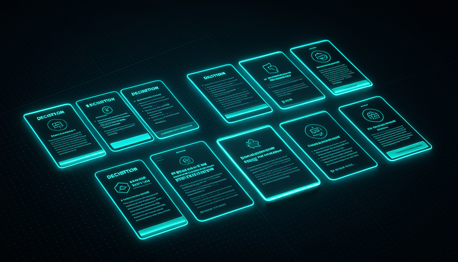
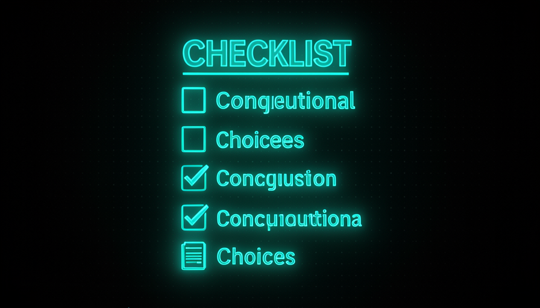

📖 Glossário vivo (leia antes — volte sempre que precisar)
Estes são os termos NOVOS deste módulo. O vocabulário base (modelo, prompt, agente, skill, codebase, harness) foi definido na Trilha 1 — aqui a gente só usa.
🔥 A skill grill-me (texto)
🧠 Imagine assim: antes de construir uma casa, um bom arquiteto não diz "ok, vou começar". Ele te enche de perguntas: quantos quartos? sol da manhã ou da tarde? orçamento? Cada resposta evita uma parede no lugar errado. A grill-me transforma a IA nesse arquiteto chato — e é por isso que ela funciona.
A grill-me é, nas palavras de Matt Pocock, "unreasonably effective" (eficaz a um ponto que não parece justo) — e o segredo é que ela é minúscula: cabe em 4-5 frases. Ela não ensina a IA a programar; ela só muda a postura dela. Em vez de a IA pegar seu pedido vago e sair codando suposições, ela vira um entrevistador adversarial que pergunta, levanta ideias que você não considerou e resolve as dependências do design tree uma a uma.
O detalhe que faz a skill brilhar está nas instruções finais: uma pergunta por vez (não um questionário de 20 itens que te paralisa), com a resposta recomendada já junto (você só confirma ou corrige — muito mais rápido) e se a pergunta puder ser respondida olhando o codebase, a IA olha o codebase em vez de te perguntar. Esse último ponto é o que separa a grill-me de um chatbot tagarela: ela só gasta o seu tempo no que realmente exige a sua cabeça. Abaixo, o texto REAL da skill (frame 31 do vídeo) — copie e cole:
Interview me relentlessly about every aspect of this plan until we reach a shared understanding. Walk down each branch of the design tree, resolving dependencies between decisions one-by-one. For each question, provide your recommended answer. Ask the questions one at a time. If a question can be answered by exploring the codebase, explore the codebase instead.
A skill inverte o jogo: a IA te interroga em vez de adivinhar. O resultado é o entendimento compartilhado.

⚠️ Erro comum de iniciante
Achar que "skill boa" = "skill grande". A grill-me é poderosa porque é curta. Se você inflar ela com 30 regras, ela vira ruído, gasta context window e perde o foco. Resista à vontade de "melhorar" alongando.
Em 1 frase: grill-me são 5 frases que viram a IA num entrevistador adversarial — uma pergunta por vez, com palpite junto.
Indo mais fundo (opcional): por que "uma pergunta por vez" muda tudo?
Quando a IA despeja 15 perguntas de uma vez, você responde no piloto automático e as decisões importantes se perdem no meio. Uma pergunta por vez força foco: cada resposta sua atualiza o contexto e refina a próxima pergunta. É um diálogo, não um formulário. Some isso ao "dê sua resposta recomendada" e você passa de autor de respostas a revisor de respostas — muito menos esforço por decisão.
🔟 O prompt das 10 decisões
🧠 Imagine assim: você vai viajar de carro pelo país. Há mil decisões (qual posto, qual lanche), mas só umas 10 mudam a viagem inteira: rota, carro, datas, com quem vai. Errar uma lanchonete custa 5 minutos; errar a rota custa o dia. O prompt do David força a IA a listar as "rotas" antes de te deixar pegar a estrada.
Enquanto a grill-me é uma skill salva, o prompt favorito do David Ondrej é uma instrução que ele cola direto. A estrutura tem três movimentos numa frase só: (1) "descreva a minha visão" — força a IA a te devolver, com as palavras dela, o que ela entendeu do que você quer (e aí você já pega mal-entendidos cedo); (2) "liste as 10 decisões mais consequentes" — de software design / arquitetura e de produto — que vão moldar o projeto; e (3) "me entreviste até entender 98%".
O número "10" não é mágico — é um orçamento de atenção. Ele obriga a IA a priorizar: separar as escolhas que moldam tudo (uma decisão consequente, tipo "monolito ou microserviços", "qual banco de dados", "auth própria ou terceirizada") daquelas reversíveis e baratas (a cor de um botão). Sem esse teto, a IA ou lista 3 coisas óbvias ou despeja 50 itens triviais. Pedir exatamente as 10 mais consequentes é o que produz uma conversa que vale o seu tempo. Copie o prompt:
Descreva a minha visão para este projeto com as suas palavras. Depois, liste as 10 decisões mais consequentes — de software design / arquitetura e de produto — que vão moldar este projeto. Então me entreviste, uma pergunta por vez, até você entender a minha visão em 98%. Para cada pergunta, dê a sua resposta recomendada. Se algo puder ser respondido explorando o codebase, explore o codebase em vez de me perguntar.
Em 1 frase: "descreva a visão → liste as 10 decisões mais consequentes → me entreviste até 98%" obriga a IA a priorizar antes de codar.
🎯 "Me entreviste até 98%"
🧠 Imagine assim: "entendi 100%" não existe — sempre sobra um detalhe que só aparece codando. Mas "entendi 60%" é receita de retrabalho. O 98% é o ponto doce: alinhado o bastante pra começar, sem virar uma reunião infinita atrás da perfeição.
O "98%" é um número de parada esperto. Ele resolve o problema oposto da grill-me solta: sem um alvo, a entrevista ou para cedo demais (a IA acha que entendeu e some uns 50%) ou nunca para (pergunta detalhe trivial até o fim do mundo). Ao pedir "até 98%", você diz à IA: continue me interrogando enquanto houver decisão consequente em aberto; pare quando só restarem detalhes que se resolvem na implementação. É a tradução prática do shared understanding de Pocock.
Por que não 100%? Porque os últimos 2% só aparecem com as mãos no código — querer fechá-los na entrevista é desperdício. E por que esse alinhamento prévio vale tanto? Porque é aqui, na conversa barata, que você "tira a esquisitice antes de implementar" (flush out weirdness before we implement, nas palavras de Pocock). Um mal-entendido pego na entrevista custa uma frase; o mesmo mal-entendido pego depois de 2 horas de código custa as 2 horas — mais a sua paciência. Erro comum: tratar a entrevista como burocracia e responder "tanto faz" em tudo — aí o 98% é falso e o retrabalho volta.
🔬 Exemplo resolvido: a grill-me numa "app de notas"
Você cola o prompt das 10 decisões com a visão "quero um app pra eu anotar ideias". A IA descreve sua visão e abre a entrevista, uma pergunta por vez, com palpite junto:
IA · pergunta 1 (decisão: público)
"É só pra você ou multiusuário? Recomendo: só você no v1 — corta auth e sincronização agora." → Você: "só eu."
IA · pergunta 2 (decisão: persistência)
"Notas no navegador (localStorage) ou num arquivo no disco? Recomendo: arquivos .md numa pasta — portáteis e versionáveis." → Você: "arquivos .md, sim."
IA · pergunta 3 (decisão: busca)
"Busca por texto basta ou quer tags? Recomendo: texto no v1, tags depois." → Você: "texto basta."
Em 3 perguntas, três decisões consequentes foram travadas — antes de uma linha de código. A IA chega a 98% e só então propõe o plano. Sem a grill-me, ela teria chutado "multiusuário + banco Postgres + auth" e você descobriria o exagero só na revisão.
Recuperação rápida: por que o prompt pede "98%" e não "100%"?
Em 1 frase: 98% é "alinhado o bastante pra começar" — os 2% finais se resolvem com as mãos no código.
⏱️ Quando usar
🧠 Imagine assim: você não chama o arquiteto pra trocar uma lâmpada. Mas pra levantar uma casa? Sempre. A grill-me é o arquiteto: use quando a tarefa for nova, ambígua ou cara de errar — não pra um ajuste de uma linha.
Pocock posiciona a grill-me como substituto do plan mode: em vez de o agente cuspir um plano que você aprova no escuro, ele te entrevista primeiro. A frase dele resume o gatilho: "here's my idea, interview me, let's reach shared understanding, flush out weirdness before we implement." Ou seja: use sempre que houver uma ideia com ambiguidade a resolver antes da execução.
Na prática, vale a pena quando: a feature é nova (não há padrão pronto no codebase), há decisões de arquitetura ou produto em jogo, o custo de errar é alto (refazer dói), ou você sente que a sua própria ideia ainda está nebulosa. Não vale para tarefas pequenas e óbvias ("renomeie essa variável", "corrija esse typo") — aí a entrevista vira fricção. Erro comum: rodar grill-me em tudo, inclusive no trivial, e se irritar com a IA "perguntando demais" — o problema não é a skill, é o contexto errado de uso.
✓ Use grill-me quando…
- • Feature nova, sem padrão no codebase.
- • Decisões de arquitetura/produto em jogo.
- • Custo de errar é alto (refazer dói).
- • Sua própria ideia ainda está nebulosa.
✗ Pule a grill-me quando…
- • É um typo, rename ou ajuste de uma linha.
- • Já existe padrão claro pra seguir.
- • A tarefa é mecânica e reversível.
- • Você só quer um rascunho rápido pra jogar fora.

Em 1 frase: use a grill-me como substituto do plan mode em tudo que for novo, ambíguo ou caro de errar — não no trivial.
🛠️ Adaptar ao seu projeto
🧠 Imagine assim: a grill-me é uma receita-base de bolo. Funciona pura, mas fica melhor quando você ajusta ao seu forno: troca o número de decisões, o foco do projeto, o tom. A estrutura continua; os ingredientes você calibra.
Pocock insiste que skills são pra adaptar, não venerar. A grill-me e o prompt das 10 decisões são pontos de partida; o ganho real vem de calibrá-los ao seu contexto. Três alavancas: (1) o número — "10 decisões" pode virar 5 num bug fix ou 15 num produto greenfield; (2) o foco — peça que as decisões privilegiem o que importa pra você (performance? acessibilidade? custo de infra?); (3) o gatilho codebase — em projeto já existente, reforce "explore o codebase antes de me perguntar" pra ela não te interrogar sobre coisas que já estão decididas no código.
Outra adaptação poderosa: salvar a grill-me como uma skill nomeada (ex.: /grill-me) pra invocar com um comando, e manter a versão das 10 decisões como um snippet que você cola quando o projeto é grande. E o ponto que conecta com a próxima aula: a grill-me raramente anda sozinha — ela é o primeiro elo de um pipeline (grill-me → PRD → issues) que você verá no módulo 5.3. Erro comum: copiar o texto em inglês e nunca traduzir/ajustar pro seu domínio — a skill rende muito mais quando fala a língua do seu projeto.
--- name: grill-me description: Entrevista adversarial antes de implementar. --- Descreva a minha visão com as suas palavras. Liste as N decisões mais consequentes (arquitetura + produto), priorizando CUSTO e SIMPLICIDADE. Me entreviste uma pergunta por vez até 98% de entendimento, sempre com a sua resposta recomendada. Se a resposta estiver no codebase, explore o codebase em vez de perguntar. (N = 5 pra bug fix, 10 padrão, 15 pra projeto novo.)
Em 1 frase: mantenha a estrutura (descreva → liste → entreviste até 98%) e calibre número, foco e gatilho de codebase ao seu projeto.
🚧 Erros comuns
🧠 Imagine assim: de nada adianta o melhor arquiteto do mundo se você responde "tanto faz" pra toda pergunta dele. A grill-me só funciona se você joga junto — ela amplifica a sua clareza, não a substitui.
A grill-me falha de poucos jeitos previsíveis. O primeiro é inflar a skill: você "melhora" o texto enchendo de regras, ela perde o foco e o efeito some. O segundo é responder no automático ("tanto faz", "pode ser") — aí o 98% é falso e o retrabalho que você queria evitar volta. O terceiro é pular o gatilho de codebase: sem "explore o codebase em vez de me perguntar", a IA te interroga sobre coisas que já estão decididas no código, e você se cansa à toa.
O quarto é usar no contexto errado (entrevistar pra um typo) — fricção pura. E o quinto, mais sutil: aceitar o palpite da IA cego. As "respostas recomendadas" são um atalho ótimo, mas você é o dono do produto (lembra a Trilha 2) — se o palpite dela contraria a sua visão, o trabalho é justamente corrigir, não confirmar. A grill-me te dá um copiloto que pergunta; o piloto continua sendo você. Use o checklist abaixo antes de cada entrevista:
As cinco armadilhas no caminho. Evite todas e você chega a um 98% que é real.
Antes de rodar a grill-me, cheque: [ ] A skill está CURTA (4-5 frases)? Não inchei de regras? [ ] A tarefa é nova/ambígua/cara de errar? (Se trivial, pule.) [ ] Incluí "uma pergunta por vez" + "dê sua resposta recomendada"? [ ] Incluí "explore o codebase em vez de me perguntar"? [ ] Vou responder DE VERDADE (nada de "tanto faz")? [ ] Lembro que o palpite da IA é sugestão — eu decido o produto?
Recuperação rápida: qual destes NÃO é erro de uso da grill-me?
Em 1 frase: a grill-me amplifica a sua clareza — ela falha quando você infla a skill, responde no automático ou abdica de decidir.
🧾 Resumo do Módulo
Próximo módulo:
5.3 — Pipeline grill-me → PRD → issues: encadeie a entrevista num fluxo do brain ao backlog.